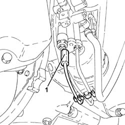
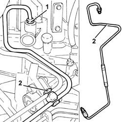
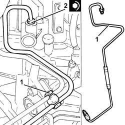
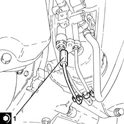

2127C26 PIPE FROM ODD GEARS ENGAGEMENT SOLENOID VALVE TO SELECTOR/ENGAGEMENT ACTUATOR - R.R.
- Path
- Procedures > 21 GEARBOX > 2127 ELECTRO-HYDRAULIC SELECTION. GEARBOX EXTERNAL. CONTROLS > 2127C hydraulic gear selection system > 2127C26 PIPE FROM ODD GEARS ENGAGEMENT SOLENOID VALVE TO SELECTOR/ENGAGEMENT ACTUATOR - R.R.
- Kind
- repair procedure (removal / refitting; the operation number is the code)
- Applies to
- engines: 3.2 V6; all production periods
- Interactive page
- https://sloeber94.github.io/elrnDB-a156/en/#/3237972
Applies to: engines: 3.2 V6; all production periods; only with equipment: Smart gearbox
 Removing
Removing
 Refitting
RefittingConnect the Examiner diagnostic equipment.
Keep the brake pedal depressed.
Select 'Alf 156 Selespeed' on the Examiner.
Select 'Control Unit Test' on the Examiner and select the 'Marelli Selespeed Automatic Transmission'.
Press 'Active Diagnosis' on the Examiner and select 'Accumulator depressurizing'.
Continue with the procedure on the Examiner.
Proceed with removal 5530B10 battery - r+r .
Proceed with removal 5530B52 Battery DRIP TRAY/SUPPORT - R.R. .
Proceed with removal 1048A10 air cleaner filtering element - replace .
Proceed with removal 7055B54 under-engine guard - r r .
1. Undo the connector and disconnect the pipe between the uneven gear engagement solenoid valve and the engagement/selection actuator, hydraulic actuator unit side.

Applies to: engines: 3.2 V6; all production periods; only with equipment: Smart gearbox
1. Undo the connector and disconnect the pipe between the uneven gear engagement solenoid valve and the engagement/selection actuator, gear engagement electro-hydraulic selection device side.
2. Remove the pipe between the uneven gear engagement solenoid valve and the engagement/selection actuator after having released it from the fastenings.

Applies to: engines: 3.2 V6; all production periods; only with equipment: Smart gearbox
Refitting
Removing1. Place the pipe between the uneven gear engagement solenoid valve and the engagement/selection actuator back in its housing and secure it using the bands.
2. Connect the pipe between the uneven gear engagement solenoid valve and the engagement/selection actuator, gear engagement electro-hydraulic selection device side and tighten the connector to the recommended torque.
 | Fastening | Component | Ø | Value (daNm) |
|---|---|---|---|---|
2 | Connector | PIPE FROM UNEVEN GEAR ENGAGEMENT SOLENOID VALVE | M12 | (Gear engagement electro-hydraulic selection device side) 1.4 ÷ 1.8 |

Applies to: engines: 3.2 V6; all production periods; only with equipment: Smart gearbox
1. Connect the pipe between the uneven gear engagement solenoid valve and the engagement/selection actuator, hydraulic actuator unit side and tighten the connector to the recommended torque.
| Fastening | Component | Ø | Value (daNm) |
|---|---|---|---|---|
1 | Connector | PIPE FROM UNEVEN GEAR ENGAGEMENT SOLENOID VALVE | M12 | (Hydraulic actuator unit side) 1.4 ÷ 1.8 |

Applies to: engines: 3.2 V6; all production periods; only with equipment: Smart gearbox
Proceed with refitting 1048A10 air cleaner filtering element - replace .
Proceed with refitting - 0010T47 hydraulic system fluid for gearbox with hydraulic selection check level and top up if necessary .
Proceed with refitting - 0010T48 hydraulic system for gearbox with hydraulic selection bleed air .
Proceed with refitting 5530B52 Battery DRIP TRAY/SUPPORT - R.R. .
Proceed with refitting 5530B10 battery - r+r .
Proceed with refitting 7055B54 under-engine guard - r r .